Enzyme Technology
Analysis of diffusional effects in porous supports
So far, only external diffusional control of immobilised
enzyme catalysed reactions has been described. This has been more due to the
ease of the analysis rather than the scale of its application. Although it is
undoubtedly extremely important, most immobilised enzyme catalysts are porous to
some extent which necessitates the examination of the effect of internal
diffusional resistance. Porous particles generally have very large surface areas
of up to several hundred square metres per gram enabling very high immobilised
enzyme loading. Where such biocatalysts operate under total external diffusional
control (i.e., equation 3.27 holds) then the surface substrate concentration is
effectively zero, no substrate is available for penetration into any pores and
internal diffusion may be safely ignored as being of no importance. However, in
all other cases it may well be relevant. This is because the pathways through
which the substrate travel internally within the particles are generally much
greater than those involved in external diffusional control (i.e., the pore length
is several orders of magnitude greater than the depth of the surrounding
stagnant layer, d). It should be noted that the effect of external
diffusional limitations can be moderated, and sometimes removed completely, by
changing the flow rate of the substrate solution over the biocatalytic surface,
but such changes have no influence on the diffusion of the substrate within the
protected environment of the interior of the particles.
Diffusion of the
substrate and product inside a porous biocatalyst occurs in parallel with the
catalysed reaction. The more the enzyme catalysed reaction reduces the substrate
concentration within the particles, the greater will be the substrate
concentration gradient created between the internal microenvironment and the
bulk of the solution. This, in turn, will increase the rate at which the
substrate is delivered to the enzyme molecules towards the outside of the
particles, increasing their effectiveness. The productivity of the reaction is,
therefore, reduced considerably by the serious depletion of the substrate deep
within the particle and the consequent high concentrations of product to be
found there, possibly causing inhibition or reversing the reaction. To a certain
extent, however, this is compensated by the increased flow of substrate to the
outer portion of the immobilised enzyme particles due to the increased substrate
concentration gradient.
Analysis of the effect of internal diffusion is
complicated by such factors as the shape of the particles, the distribution in
size and shape of the pores, the total volume of the pores with respect to the
particle volume (porosity, h), the depth
to which the pores penetrate the particles (e.g., pellicular particles have only a
thin layer of enzyme-containing pores at their surface), the
tortuosity (t) of the route through the
pores that the substrate encounters, the effective diffusivity of the reactants
and products within the pores and the degree of uniformity of the enzyme's
distribution within the particles (many immobilisation methods produce a higher
volumetric concentration of enzyme towards the exterior of the immobilised
enzyme particles, due to the rapid nature of the immobilisation reaction which
immobilises the enzyme before it fully penetrates the pores). In order to
examine the effect of these factors on a real system, it is useful to start with
an analysis of the effect of internal diffusional resistance on the productivity
of a 'model' porous biocatalytic particle. Beaded pellets are the most commonly
encountered porous biocatalysts and may be considered as perfectly spherical for
this purpose. The kinetics of other types of porous biocatalyst (e.g., flat
membranous sheets, cylindrical pellets and fibres) may be analysed using a
similar approach to that outlined here.
A porous spherical particle of
immobilised enzyme may be represented as shown in Figure
3.6. The simplified
model used in this analysis also requires that
- the immobilised enzyme is
uniformly distributed throughout the totally porous particle (i.e., h and
t are both unity),
- the Michaelis-Menten model describes the enzyme's
kinetics,
- the system is operating under steady-state conditions and is
isothermal,
- the diffusion of substrate and product obeys Fick's law (i.e., they are proportional to their concentration gradients), and the effective
diffusivities are constant throughout the particle,
- there is no external
diffusional resistance (i.e., the substrate concentration at the particle surface
([SR]) equals that in the bulk of the solution ([S0]), and
- neither partition nor inhibition occur.
Under steady state conditions, the
net rate of diffusion of the substrate through a concentric slice of width
dr into a 'model' spherical immobilised enzyme particle at the radial
position r from its centre must equal the rate of reaction of the substrate
within that slice. The rate of substrate diffusion into the slice from the
outside equals the flux (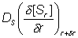) times
the area of the outside of the slice (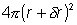).
The rate of substrate diffusion out of that slice towards the interior of the
particle equals the flux
(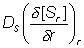) times the area of
the inside of the slice (4pr2). The rate of substrate reaction
within the slice equals the volumetric activity
(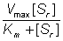) times the volume
(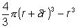). Therefore, by
combining these processes and ignoring the negligibly small terms in dr2 and
dr3:
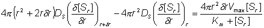
(3.46)
Simplifying and using the identity between
(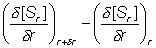
and 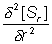
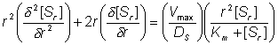
(3.47)
This may be further simplified by substitution
with the dimensionless units; r for r/R, S for
[Sr]/[SR], and b for
[SR]/Km.
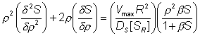
(3.48)
The relative effects of internal diffusion and
the kinetic rate of reaction can be described by use of a substrate modulus for
internal diffusion (f) which is conceptually similar to m for
external diffusion. f, however is defined differently for each type of
porous biocatalyst (e.g., porous spheres, flat porous membranes, pellicular
particles). Substituting q for
(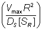) and combining the left
hand terms in equation 3.48 gives,
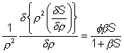
(3.49)
Therefore, as the slice width
dr tends to zero
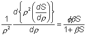
(3.50)
An alternative definition of f (f#) which is linear with respect to the
characteristic length of the system (in this case this is the ratio of the
volume to surface area (R/3)) is sometimes used, where:
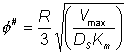
(3.51)
and,
therefore, the two moduli are related by the expression:
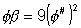
(3.52)
This definition corresponds
closer to that of m, the substrate modulus for external diffusion, in
that it is linear with respect to length. Thus, increases in the radius of
porous particles are shown to be an additional factor which may cause
diffusional control in an immobilised enzyme catalysed reaction. The equation
3.50 cannot be solved analytically but may be solved by numerical methods using
the boundary conditions that S and r are unity at the exterior surface
of the particle, and r and dS/dr are zero at the centre of the
particle. This latter condition is necessary for reasons of symmetry through the
centre of the particle. The solution is achieved by an iterative choice of the
substrate concentration at the centre of the particle and using the relationship
3.49 to describe the changes in the substrate concentration, in small steps,
from the centre outwards to the surface of the particle until the first boundary
condition is met to within the accuracy required. The resultant concentration
profile, which can be rapidly obtained using a fairly simple microcomputer,
enables the overall rate and effectiveness of reaction, catalysed by the
particle, to be calculated. Clearly, only if the substrate concentration is
unchanged throughout the particle will the effectiveness of the enzyme be
unchanged relative to freely soluble enzyme (i.e., h
= 1). This is
unlikely to be approached except in the case of very low enzyme loading or very
small particles. The substrate modulus (f) indicates the importance of
these factors, being proportional to the enzyme loading and the square of the
particle diameter and inversely proportional to the diffusion coefficient. In
this example, it is also inversely proportional to the bulk substrate
concentration as this governs the extreme value obtainable by the concentration
gradient.
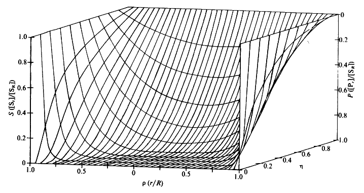
Figure
3.23. Substrate concentration profiles across spherical porous
biocatalytic particles. The axes depict the substrate concentration relative to
the external substrate concentration (S, which represents [Sr]/[SR]), the dimensionless radial position (r,
representing r/R) and the effectiveness factor (h). The profiles were
derived by changing the substrate modulus (f) while keeping b
([SR]/Km) constant (and equal to 0.1). Product concentration
profiles are also shown; calculated assuming zero bulk product concentration and
that the diffusion coefficients of substrate and product are equal.
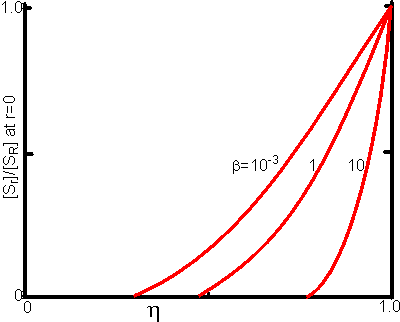
Figure 3.24. This shows the variation of the substrate
concentration in the centre of immobilised enzyme particles with the
effectiveness factor (h). Values for b (representing
[SR]/Km) of 10, 1 and 10−3 are illustrated.
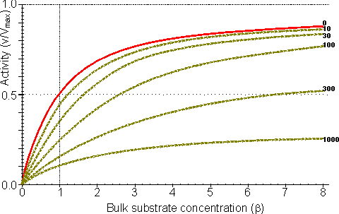
Figure 3.25. The variation in the rate of reaction
catalysed by porous spherical particles containing immobilised enzyme with the
dimensionless surface concentration of substrate, b (representing
[SR]/Km). The top curve represents the case where there is
no diffusional control (i.e., zero f') whereas the lower curves show the
effect of progressively greater normalised substrate modulus for internal
diffusion, f' (equalling 10, 30, 100, 300 and 1000). f' is the
substrate modulus for internal diffusion (q) normalised with respect to
the Km (i.e., f' = bf) in order to make it independent
of the absolute value of the exterior substrate concentration. The shapes of the
curves displayed should be compared with those encountered under conditions of
external diffusional control (Figure 3.12). Particularly note the absence here
of the significant linear portion at low b and high substrate modulus.
The substrate
concentration profiles across the particles at various effectiveness factors are
shown in Figure 3.23. It can be seen that even at high h the substrate
concentration drops significantly towards the centre of the particles and at low
h this drop is so severe that the centres of the particles encounter
very little substrate (Figure 3.24). This is particularly apparent at high
b ([SR]/Km) as the reaction rate is close to
Vmax and small changes in the substrate concentration do not
significantly lower the effectiveness factor. The variation in the rate of
reaction with substrate concentration and substrate modulus is shown in Figure
3.25. At low effectiveness factors, only the outer layer of the biocatalytic
particle is utilised causing the particles to show an impressive apparent
stability with time; relatively unused enzyme within the particle core only
being brought into use as the surface immobilised enzyme inactivates due to
denaturation.
The variation of the effectiveness factor with the substrate modulus and the
dimensionless substrate concentration is shown in Figure
3.26, which should be
compared with the equivalent relationship for external diffusion shown in Figure
3.13. From this it can be seen that values of the substrate modulus below unity
have little effect on the productivity of the immobilised enzyme particles, but
higher values result in a considerable reduction in the effectiveness of the
enzyme especially at low substrate concentrations.
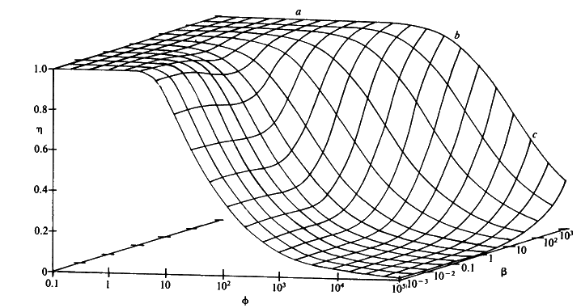
Figure 3.26. The combined effect of the bulk substrate
concentration b (representing
[SR]/Km) and substrate
modulus for internal diffusion (f) on the effectiveness factor
(h) of porous spherical biocatalytic particles. The plateau (a) is an
area of kinetic control, the graphical surface dropping through an area of
intermediate control (b) to an area of diffusional control (c).
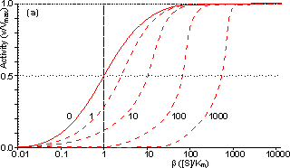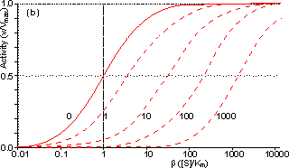
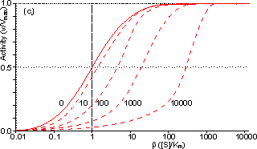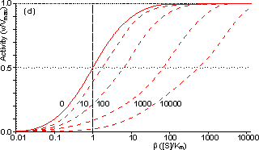
Figure 3.27. Semi-logarithmic
plots for externally (a, b; m
= 0, 0.1, 0.3, 1, 3 and 10) and internally (c, d; f'
= bf = 0, 1, 3, 10, 30,
100, 300 and 1000) controlled reactions involving immobilised biocatalysts.
(a) and (c) show non-reversible reactions whereas (b) and (d) have been calculated
for the reversible reaction involving glucose isomerase (Keq = 1.14,
bulk concentration of glucose (S) and fructose (P) being 51% and 42% (w/w),
respectively, of the total carbohydrate).
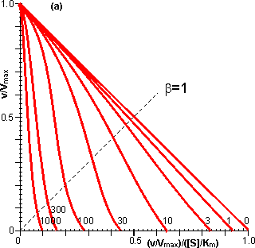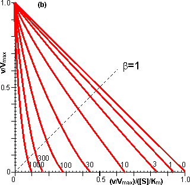
Figure 3.28. Eadie-Hofstee
plots for internally (f'
= bf = 0, 1, 3, 10, 30,
100, 300 and 1000) controlled reactions involving immobilised biocatalysts.
(a) non-reversible reaction, (b) reversible reaction involving glucose isomerase
(Keq = 1.14, bulk concentration of glucose (S) and fructose (P) being
51% and 42%, respectively, of the total carbohydrate). These plots correspond
to those shown in Figure 3.27 (c, d).
Figure 3.18 (a, b) shows equivalent plots for Figure
3.27 (a, b).
In real systems, the effectiveness factor is further
reduced by steric effects which have been ignored in the above analysis. Where
the substrate is large compared with the pore diameter, the effective
diffusivity of the substrate within the pores will be significantly reduced,
increasing f. This reduction is generally proportional to the tortuosity
of the pore geometry (t) and inversely proportional to the particle
porosity (h; see Figure 3.6 for definitions of t and h).
The effective diffusion coefficient is additionally reduced as the ratio of the
effective diameter of the substrate increases relative to the pore diameter,
particularly where this ratio exceeds 0.02. This relationship usually causes a
decrease in the effective diffusivity with the depth penetrated by the
substrate. The active site of the enzyme may additionally be masked from binding
the substrate by the difficulty with which the substrate can rotate within the
confined space of the pores to give the correct effective conformation. The
effectiveness factor may be increased by non-isothermal conditions where the
reaction generates heat within the particles which is then unable to escape
rapidly to the bulk phase. Non-isothermal operation is only rarely encountered
as most enzyme catalysed reactions generate little heat and the catalytic
particles are fairly small having large surface areas, through which the heat
may escape, for their volume.
Under circumstances where both external and
internal diffusion gradients are found, the flux of substrate through the
stagnant layer (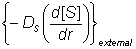) must equal the flux
entering the surface of the particles (),
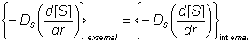
(3.53)
As the effective
diffusion coefficient of the substrate within the particles (DS) is
usually less than that in free solution, the substrate concentration gradient (d[S]/dr)
within the particles must be greater than that occurring outside.
Determination
of the intrinsic kinetic constant (Km) is more complex in the case of
internal than external diffusional control due to the added complexity
concerning variation in the effective substrate diffusivity. It is best
determined under conditions where q is less than unity, when little
diffusional effect is apparent. Such conditions can be achieved by use of
sufficiently small particles or low enzyme loading. Knowledge of the intrinsic
Km value(s) and Vmax (obtained at high substrate concentrations,
see Figure 3.27) allows the effective diffusion coefficients to be calculated.
The effect of internal diffusional control on reversible or inhibited
reactions is similar to that encountered under external diffusional control. It
may be analysed as outlined earlier for uninhibited non-reversible reactions,
but replacing the equation for the volumetric activity by one involving
reversibility or inhibition. For example, in the case of the reversible glucose
isomerase reaction, the Michaelis-Menten volumetric activity term in equation
3.46 may be replaced by that from equation 1.56. This gives the following
relationship, after a similar derivation to that shown in equations 3.46 to
3.49,
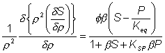
(3.54)
where P represents [Pr]/[SR], [Pr] represents the product
concentration at radial position r and KSP replaces
KmS/KmP. Under steady state conditions, the
diffusion of substrate inwards, and product outwards are linked by the
relationship
(3.55)
where DP
is the diffusion coefficient of the product.
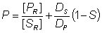
(3.56)
This value for P may be substituted into equation 3.54 and the
resultant equation solved by an iterative numerical method as outlined
previously.
A comparison of the rates of reaction for non-reversible and
reversible reactions under both internal and external diffusion control are
shown in Figures 3.27 and 3.28. Figure 3.27 emphasises the fact that diffusional
control of a reaction can be overcome at sufficiently high substrate
concentrations whatever the type of control or substrate modulus (so long as the
substrate remains soluble and no substrate inhibition occurs). The two types of
diffusional control may be distinguished at the higher values of substrate
modulus by the pronounced differences in the steepness of the sigmoidal curve in
the intermediary range of reaction rates (e.g., between 10% and 90% of
Vmax). This is because the rate of internally diffusion controlled
reactions at low substrate concentrations are increased somewhat by the higher
substrate flux through the outer layers of the porous biocatalysts. This effect
can also be seen in the Eadie-Hofstee plots (Figure 3.28) at low rates of
reaction. In practice, these graphs suffer from drawbacks if they are to be used
to distinguish internal from external diffusional control. The semi-logarithmic
plots need high substrate concentrations to be possible without these adversely
affecting the reaction, whereas the Eadie-Hofstee plots are most prone to error
within the area of interest.
The difference between internal and external diffusional
control is most noticeable in the variation in the rate of reaction with
temperature. Reactions catalysed under conditions of external diffusional
control obey equation 3.27. Their rates are independent of the activity of the
enzyme and are, therefore, also almost independent of the temperature. Clearly,
violent changes in temperature may affect the enzyme sufficiently that the rate
of reaction is reduced below the rate at which the substrate can diffuse from
the bulk of the solution, but then the reaction is no longer diffusionally
controlled. Reactions catalysed under conditions of internal diffusional control
do not obey equation 3.27. Increasing temperatures increase the rate at which
the immobilised enzymes catalyse the reaction. This increases the substrate
concentration gradient causing an increase in the flux of the substrate through
the outer layer of the biocatalytic particles. Effectively, this halves the
standard free energy of activation for the reaction relative to that catalysed
by the free enzyme in solution. It should be noted that any such reduction in
activation energy will reduce the effect of increased temperature on the
reaction rates of immobilised enzymes. The relationship between the rate of
reaction and temperature is shown schematically in Figure
3.29.
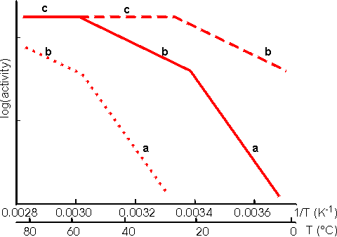
Figure 3.29. Schematic
Arrhenius plots showing the progressive effect of diffusional limitations on the
rate of reaction catalysed by porous particles containing immobilised enzyme. As
the temperature increases the activity progresses through three phases (a), (b)
and (c), in that order. (a) represents enzyme kinetic control of the reaction.
The rate of reaction is sufficiently slow that no diffusional limitations are
noticeable. The standard free energy of activation may be obtained from the
gradient of this line. (b) represents control of the reaction rate by the
internal diffusion of the substrate (i.e., the intrinsic rate of reaction has
increased to greater than the rate at which substrate can diffuse into the
particles). (c) represents control of the reaction rate by the diffusion of the
substrate to the surface (i.e., the intrinsic rate of reaction has increased to
greater than the rate at which substrate can diffuse through the stagnant layer
surrounding the particles). No substrate is available for penetration into the
pores. ----------- low enzyme loading, ———
intermediate enzyme loading,·········high enzyme loading. An Arrhenius plot using real data for an
immobilised enzyme would show pronounced curvature between the three phases. The
transition between the linear sections would not be readily discernible, over
the range of temperatures normally encountered for the use of immobilised
enzymes, unless the standard free energy of activation for the reaction was
unusually high (e.g., above 75,000 J mole−1 for one of the transitions
or above 100,000 J mole−1 for both transitions).
Enzymic depolymerisation
(including hydrolysis) of macromolecules may be affected by diffusional control.
Large molecules only diffuse fairly slowly. After reaction, catalysed by the
biocatalyst, the cleaved fragments normally retain their ability to act as
substrates for the enzyme. They may diffuse away but are likely to be cleaved
several times while in the vicinity of the immobilised enzyme. This causes a
significant difference in the molecular weight profiles of the fragments
produced by the use of free and immobilised enzymes. After a small degree of
hydrolysis, most substrate molecules are cleaved by free soluble enzyme, whereas
immobilised enzyme produces a small quantity of well-hydrolysed low molecular
weight product with the majority of the substrate molecules unchanged. This
process is exacerbated by the use of porous biocatalysts where there is some
further restriction to the internal diffusion of large molecules. Use of
immobilised enzyme is, therefore, indicated under circumstances where only a
minimal proportion of partially hydrolysed product is required as it generally
produces a mixture of almost fully hydrolysed moieties and unchanged polymer.
The
increase in the product concentration within the micro-environment may result in
an increase in by-products caused by side reactions, especially where the
reverse reaction catalysed by enzyme does not show complete specificity for the
re-formation of the substrates. This is particularly apparent in the action of
some carbohydrases. The increased microenvironmental product concentration may
be utilised, however, where a reaction pathway is required. Co-immobilisation of
the necessary enzymes for the pathway results in a rapid conversion through the
pathway due to the localised high concentrations of the intermediates (Figure
30).
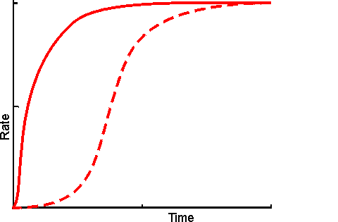
Figure
3.30. Schematic diagram showing the effect of co-immobilisation on the
rate of production through a short reaction pathway. ---------- mixture of free
enzymes, in solution; ———
co-immobilised enzymes showing a much
reduced lag phase. The reduction in the apparent lag phase is most noticeable
when there are more enzymes in the pathway. It is least pronounced where the
flux through the pathway is controlled by the first step as the
microenvironmental concentration of the initial substrate cannot be higher than
its bulk concentration but those of all intermediates may be raised due to
diffusional restriction on their rate of efflux.
A logical extension of the use
of immobilised multi-enzyme systems is the use of immobilised cell systems.
These may be in a form which still allows respiration and reproduction or, in a
restricted form, which cannot manage these functions but does retain catalytic
activity. Sometimes they are treated with inhibitors or by physical means (e.g., heat) to ensure that only a sub-set of their natural enzymes remain active.
Compared with immobilised multi-enzyme systems, immobilised cells are generally
cheaper, easier to prepare with high activity, show little change in
performance, on immobilisation, with respect to pH, ionic strength and
temperature, and are generally preferred for use with metabolic pathways
involving intracellular enzymes or dissociable cofactors or coenzymes. However
they do suffer from a number of practical disadvantages. They are more prone to
microbial contamination, less efficient with respect to substrate conversion to
product, much more difficult to control and present diffusional problems due to
their cell membranes.
Home
| Back | Next
This page was established in 2004 and last updated by Martin
Chaplin
on
6 August, 2014
|